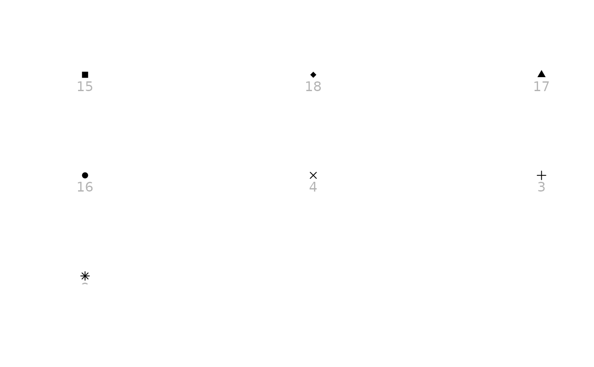

Shape palette based on the shapes used in LibreOffice Calc.
Note
This palette supports seven values by default and thirteen with
unicode = TRUE. Six of Calc's thirteen symbols – the solid down,
left and right triangles, the bowtie, the hourglass and the four-pointed
star – have no base pch equivalent and are dropped rather than
approximated by a different shape. Restoring them with unicode = TRUE
needs a font covering Geometric Shapes, Dingbats and Miscellaneous
Mathematical Symbols-B; Noto Sans Symbols 2 is effectively the only free
font with the last of these.
See also
Other shapes calc:
scale_shape_calc()
Examples
# The seven shapes with a font-independent equivalent.
show_shapes(calc_shape_pal()(7))

if (FALSE) { # \dontrun{
# All thirteen, drawn from the device font. Needs a font covering Geometric
# Shapes, Dingbats and Miscellaneous Mathematical Symbols-B, such as
# Noto Sans Symbols 2.
show_shapes(calc_shape_pal(unicode = TRUE)(13))
} # }